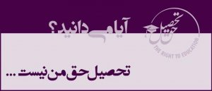

|
|
آغاز به کار کمپین حمایت از حق تحصیل شهروندان ایرانی
چهار شنبه18 اردیبهشت 1392
 کمپین حمایت از حق تحصیل شهروندان ایرانی با شعار «آیا می دانید؟ تحصیل حق من نیست ...» فعالیت های خود را از روز گذشته آغاز کرده است.
به گزارش دانشجونیوز، در اطلاعیه آغاز به کار این کمپین با اشاره به اینکه احترام به حق تحصیل برای همه شهروندان فارغ از اعتقادات مذهبی و سیاسی، جنسیت و نژاد از نشانه های بارز پایبندی حکومت ها به یکی از جنبه های مهم حقوق بشر در سطح جامعه است، از جمهوری اسلامی به دلیل نقض حق تحصیل شهروندان در طول بیش از ۳۴ سال حکومت آن به شدت انتقاد شده است.
مشاوره حقوقی به متقاضیان محروم از تحصیل، انتشار و اطلاع رسانی در مورد قوانین ناعادلانه جمهوری اسلامی، بررسی نقش نهادهای موثر در نقض حق تحصیل شهروندان در ایران- دانشجویان ستاره دار، محروم از تحصیل، اخراجی، اقلیت های مذهبی و زنان- همراه با انتشار گزارشی حاوی جزئیات بیش از ۱۰۰۰ مورد محرومیت از تحصیل گروه های نام برده شده از جمله فعالیت های این کمپین خواهد بود. این کمپین همچنین گزارشی از محرومیت از تحصیل شهروندان ایرانی را به گروه های حقوق بشری بین المللی ارائه خواهد نمود.
این کمپین از همه شهروندان دعوت می نماید با حمایت از حق تحصیل همه ایرانیان فارغ از عقاید مذهبی و سیاسی، نژاد و جنسیت، خواستار لغو قوانین ناعادلانه در این زمینه شده و با ارسال مدارک محرومیت از تحصیل خود به این کمپین، به مستندسازی اطلاعات محرومین از تحصیل و نهادهای موثر در این زمینه یاری رسان باشند.
علاقه مندان می توانند این کمپین را در صفحه فیس بوک دنبال کنند:
https://www.facebook.com/TheRight2Education
متن کامل اطلاعیه «آغاز به کار کمپین حمایت از حق تحصیل شهروندان ایرانی» در ادامه آمده است:
احترام به حق تحصیل برای همه شهروندان فارغ از اعتقادات مذهبی و سیاسی، جنسیت و نژاد از نشانه های بارز پایبندی حکومت ها به یکی از جنبه های مهم حقوق بشر در سطح جامعه است. در طول ۳۴ سال حکومت جمهوری اسلامی ایران، موارد متعددی از نقض حق تحصیل شهروندان در دانشگاه های ایران گزارش شده است. در اردیبهشت سال ۱۳۵۹، انقلاب فرهنگی در ایران منجر به حذف هزاران نفر از اساتید و دانشجویان منتقد افکار و اعمال حاکمیت شد.
پس از انقلاب فرهنگی نیز رویه ی محرومیت از حق تحصیل و قوانین ناعادلانه ی نهاد غیرقانونی شورای عالی انقلاب فرهنگی همچنان ادامه داشت. به دلیل سرکوب شدید نیروهای منتقد و مخالف در سال های دهه شصت، هسته های جدید فعالیت های انتقادی دانشجویی تا اوایل دهه هفتاد شکل نگرفت. در دوران اصلاحات نیز همچنان قوانین ناعادلانه برقرار بود ولی قربانیان محرومیت از تحصیل به طور محسوسی کاهش یافتند.
پس از روی کار آمدن محمود احمدی نژاد در انتخابات ریاست جمهوری سال ۱۳۸۴، بخشی از سیاست های وزارت علوم ایران و سازمان سنجش آموزش کشور به طور پررنگ تری در راستای تصمیمات نهادهای سرکوبگر برون دانشگاهی مانند وزارت اطلاعات و بخش هایی از قوه قضائیه قرار گرفت. این نهادها که به شکل مستقیم و غیرمستقیم زیر نظر رهبر جمهوری اسلامی مدیریت می شوند، نقش بارزی در افزایش فشار بر بدنه دانشجویی کشور ایفا نمودند. علاوه بر این، با تصمیم وزیر علوم و تایید شورای عالی انقلاب فرهنگی، افراد جدیدی به عنوان روسای دانشگاه های کشور منصوب شدند که در طول این سال ها سهم عمده ای در محرومیت از تحصیل دانشجویان داشته اند.
در همین راستا، کمپین حمایت از شهروندان ایرانی با هدف حمایت از تمام افرادی که به روش های مختلف و ناعادلانه از تحصیل در دانشگاه های کشور بازمانده اند، آغاز به کار می کند.
این کمپین با شعار «آیا می دانید؟ تحصیل حق من نیست ...» ضمن بررسی سیاست های جمهوری اسلامی در نحوه محروم کردن شهروندان از حق تحصیل، به معرفی صدها مورد محرومیت از تحصیل ایرانیان در دوره محمود احمدی نژاد و پیش از آن خواهد پرداخت.
مشاوره حقوقی به متقاضیان محروم از تحصیل، انتشار و اطلاع رسانی در مورد قوانین ناعادلانه جمهوری اسلامی، بررسی نقش نهادهای موثر در نقض حق تحصیل شهروندان در ایران- دانشجویان ستاره دار، محروم از تحصیل، اخراجی، اقلیت های مذهبی و زنان- همراه با انتشار گزارشی حاوی جزئیات بیش از ۱۰۰۰ مورد محرومیت از تحصیل گروه های نام برده شده از جمله فعالیت های این کمپین خواهد بود. این کمپین همچنین گزارشی از محرومیت از تحصیل شهروندان ایرانی را به گروه های حقوق بشری بین المللی ارائه خواهد نمود.
این کمپین از همه شهروندان دعوت می نماید با حمایت از حق تحصیل همه ایرانیان فارغ از عقاید مذهبی و سیاسی، نژاد و جنسیت، خواستار لغو قوانین ناعادلانه در این زمینه شده و با ارسال مدارک محرومیت از تحصیل خود به این کمپین، به مستندسازی اطلاعات محرومین از تحصیل و نهادهای موثر در این زمینه یاری رسان باشند. آگاه سازی دانشجویان و شهروندان از قوانین ناعادلانه، کمک به جمع آوری اطلاعات، ارتباط با نهادهای بین المللی دانشجویی و حقوق بشری از جمله مواردی است که می تواند به بهبود وضعیت دانشجویان در ایران کمک نماید.
این کمپین در اردیبهشت ماه ۱۳۹۲ (می 2013) با هدف اطلاع رسانی و جلب حمایت افراد و گروه های مختلف دانشجویی، حقوق بشری، اجتماعی و سیاسی- در داخل و خارج از کشور- از محرومین از تحصیل آغاز به کار نموده و به دنبال لغو قوانین ناعادلانه که منجر به محرومیت از تحصیل شهروندان ایرانی می شود، خواهد بود.
برای تماس با این کمپین می توانید از طریق فیس بوک و یا آدرس ایمیل با ما در تماس باشید.
https://www.facebook.com/TheRight2Education
Right2Education.Iran@gmail.com